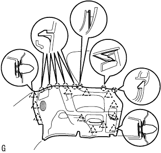

Sliding door half open stopper ASSY removal |
| 1. Remove the backdoor with the strip |
| 2. Remove the rear floor carpet |
| 3. Remove the spare wheel cover ASSY |
| 4. Remove the backdoor scuff plate |
 |
Remove two clips.
Pull up by hand from the end of the trim cover, remove the clip, and remove the Batsukudo Askatsuh plate.
| 5. Rear seat Batsuku ASSY removed (overall rear seat) |
Make the rear seat Batsuku in an advance.
 |
Remove the clip of the two bolts mounting part.
 |
Turn over the rear seat Batsuku cover, remove the two bolts, and remove the rear seat Batsuku ASSY.
| 6. Remove the rear seat cushion assemble (integrated rear seat) |
Press the lock of the front lock in the direction of the arrow in the figure to remove it.
Pass the rear seat belt through the rear seat cushion cover and pad back rubber band.
 |
Remove the hook at the rear hook at the rear seat cushion assembly, and remove the rear seat cushion assessy.
| 7. Remove the rear seat back hinge SUB-ASSY RH removed (integrated rear seat) |
 |
Remove the bolt and remove the rear seat Batsuku hinge RH.
| 8. Rear seat back hinge SUB-ASSY LH removed (integrated rear seat) |
Remove the bolt and remove the rear seat Batsuku hinge LH.
| 9. Rear seat Batsuku ASSY RH removed (rear seat split can be split) |
| 10. Rena seat Batsuku ASSY LH removed (rear seat split can be split) |
Make the rear seat Batsuku in an advance.
 |
Remove the clip of the two bolts mounting part.
|
Turn the lower part of the rear seat Batsuku cover, remove the two bolts, and remove the rear seat.
| 11. Remove the rear seat cushion assemble (rear seat split can be split) |
Lock the front side of the rear seat cushion Assy is locked by the rear seat cushion lock striker.
 |
Remove the snap ring from the rear seat back hinge RH.
Rena seat cushion Assy The right bracket is pulled out and remove the rear seat hinge RH.
 |
Remove the bolt and remove the rear -to -hing LH.
Rena seat cushion Assy rear seat hook Assy RH is drawn and the rear seat cushion Assy is removed.
Pass the rear seat belt through the rear seat cushion cover and pad back rubber band.
Remove the rear seat cushion assessy.
| 12. The front door scuff plate LH is removed |
 |
Pull it up by hand, remove the claw from behind the vehicle, and remove the front door skatif plate LH.
| 13. Deck side trim cover FR LH removed |
 |
Pull it in front of the vehicle by hand, remove the claws, and remove the Detsuki side trim cover FR LH.
| 14. Reardoors Opening Trim Weather Strip LH removed |
Remove only the part of the deck child trim cover FR LH and deck trim side panel ASSY ASSY.
| 15. Lear seat belt ASSY OUT LH removed (floor anka part) |
Remove the bolt and remove the rear seat 3 point type belt ASSY OUT LH (floor anka).
| 16. Deck trim side panel ASSY LH is removed |
|  |
Pull the sideboard in the inside of the vehicle, remove the clip and claws, and remove the Detsuki Trim Side Panel ASSY LH.
| 17. Sliding door half open stopper control ASSY |
 |
Open the fuel lid.
Take off the nut from the outside of the vehicle.
Remove the claws and remove the sliding door half -open stopper control ASSY from the indoor side.
Cut the connector.
Cut the cable.
| 18. Sliding door half open stopper ASSY |
Remove the two nuts and remove the sliding door half -form stopper.
Cabbin the cable from three clamps.
Remove two clamps and remove the slide -do heat open stopper cable.